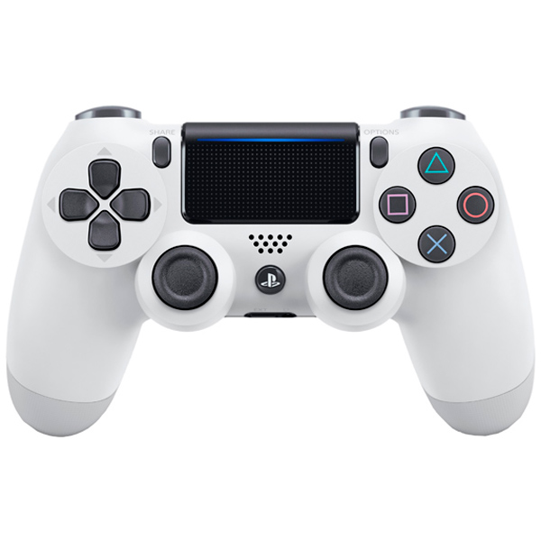

Достоинства и недостатки PC
Плюсы
1.Управление
Главным доводом фанатов ПК, который они используют в качестве аргумента в споре с любителями консолей, является якобы преимущество управления клавиатурой и мышкой. Тем не менее это весьма субъективное заявление, поскольку во время длительной игры неудобство вызывают как геймпад, так и привычные устройства компьютера для ввода.Неоспоримым фактом является то, что для разных жанров игр предпочтительней оказываются разные способы ввода. Так, например, в файтинги и гонки гораздо удобнее играть с консольным геймпадом, а в стратегиях и шутерах, наоборот, клавиатура с мышкой показывают себя гораздо лучше. Но и эти предпочтения часто оказываются субъективными и зависят исключительно от вкусов геймера.
2.Возможность апгрейда и кастомизации
Uncharted 4

God of War

Marvel's Spider-Man
Bloodborne
Yakuza 0
The Last Of Us
The Last Guardian
Тем не менее возможность постоянно «апгрейдить» ПК является и минусом, так как разработчики новых игр постоянно повышают системные требования. Приобретая компьютер с высокими техническими характеристиками, пользователю не стоит надеяться на то, что через год это же устройство «потянет» новейшие игры. В случае с консолями все гораздо проще: из-за того что новое поколение приставок выпускается раз в несколько лет, при покупке, к примеру, PS4 можно быть уверенным, что все игры, которые выйдут в ближайшие годы, будут работать. В графическом плане, благодаря возможности устанавливать в компьютер все новые и новые компоненты, ПК может на порядок обойти консоли текущего поколения. Поддержка разрешения 4К и отсутствие ограничения на количество кадров в секунду даже не снились обладателям PS4/XOne. Но зачастую у пользователей далеко не самый мощный компьютер, так как только хорошая видеокарта может стоить как сама консоль, из-за чего геймеры вынуждены довольствоваться графикой, которая зачастую на порядок ниже консольной.
3.Доступность игр

Другим неоспоримым преимуществом ПК перед консолями является гораздо большая доступность игр. Несмотря на то что игры на ПК подорожали в два-три раза (Call of Duty Black Ops III для ПК стоит 2600 руб.), они остаются дешевле консольных (в среднем 4000 руб.). Не стоит забывать и о процветающем на ПК игровом пиратстве, что для многих является решающим при выборе игровой системы.